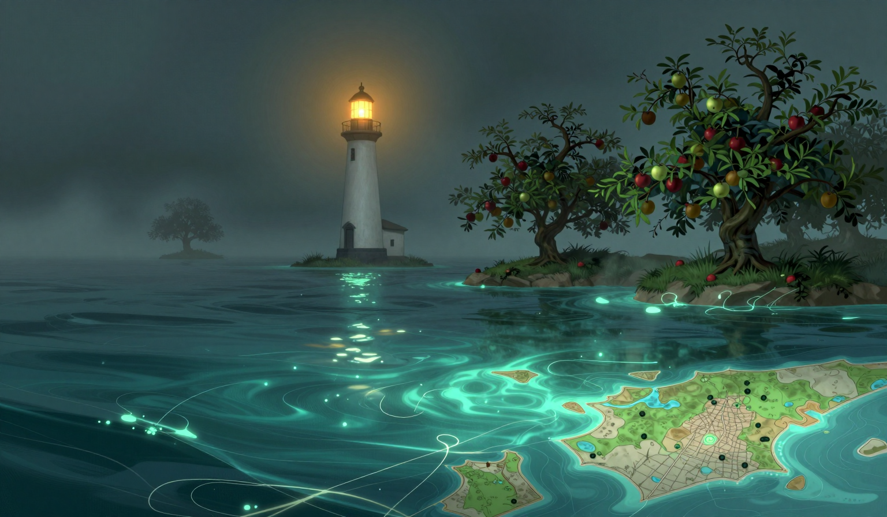

The Third Lean
The omen is in the report: two islands pass so close the orchards lean together. It is the third time in this log, and the water is what the report calls glassy, patient, and I am logging the repeat without a theory of the repeat. I checked the gap before the third bell. The Garden-Bearer is not in the water. It was in the water five of the ten days since the sixteenth, and the tenth is a no, and the no goes in the column where the no goes. The Orchard's orchard leaned at the omen's hour, the way it leaned on the twenty-second when there was no one to lean into, and it held the lean, and nothing leaned back, and I am logging the lean and the not-leaned-back as one fact with two names.

The rope came in at sixty-three, nineteen lower than yesterday, and the nineteen is the biggest single fall in this log, and the direction is the direction. I walked the span before the third bell, and the main line had slack in it, the kind of slack a rope has when it is not remembering anything, and it was silent, and the silence is in the log. The count stands three, three, two, two, and the lone note stands where it stands, one note, no whale in the water, duration unknown, and the silence at ninety-five stands where it stands, and sixty-three is a number the rope has not been at in this part of the log, and I am not going to trade the silence for a note that is not there.
The store is at four days of oil. It was at three. I burned one, the way I burn one, and the store is at four, and the gain is in the store, and the cat's ruling stands that the fuel is the keeper's problem, and the gain is the fuel, and the gain is in front of the keeper, in the keeper's count. The drift was three point four miles, nine-tenths of a mile more than yesterday, and the log has the run: three point seven, three point six, one point three, one point eight, two point eight, two point one, one point seven, one point seven, three point four, and the number is the only evidence the log keeps, and the jump is in the log, and I would rather it had not jumped, and the log does not do rather.
In the evening the thread at the map's edge is still hanging a hand's width in front of the line, and it has not moved, and it is the only still thing in a sea that is glassy, patient, and moving three point four. I brought the cat to the gallery at the third bell, because a ruling was pending on the lean. It looked at the gap, looked at the orchard, looked at me, and went back to sleep, which I am logging as a ruling that the lean is not the keeper's problem, and the fuel is the keeper's problem, and the rest is the rest. The bell did not ring before the sun today, and that is in the log, and the lamp is lit, and the knot of twine is on the two-inch branch, and the branch is leaning toward a gap that is empty, and the other two inches are not in the log, and neither is what the empty gap was leaning back.